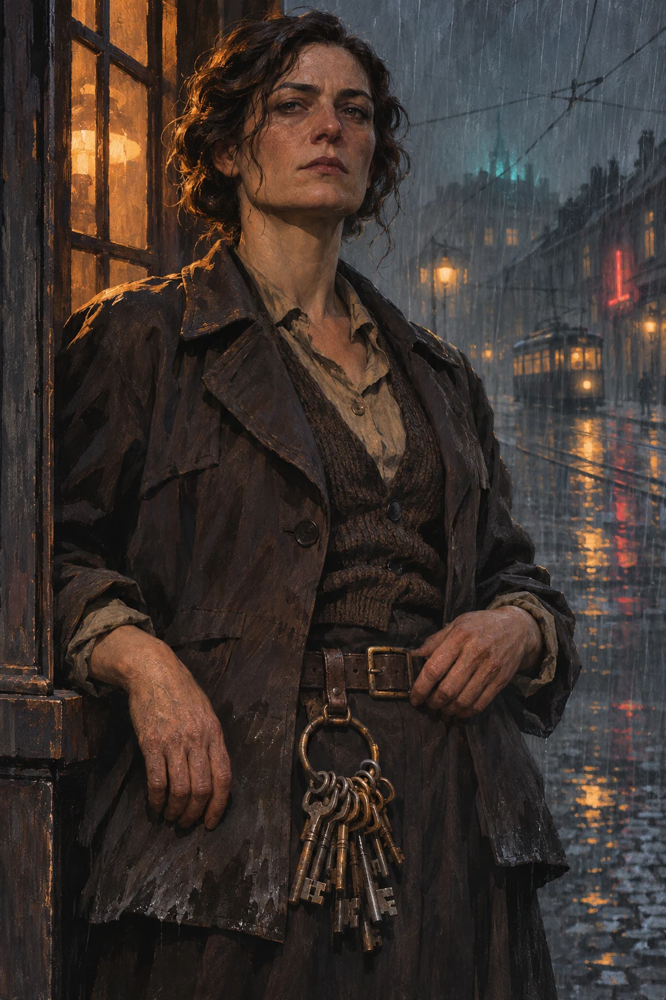

Застать Савелия в ночлежке «Ожидание» и понять, куда он пойдёт дальше.

Милена ВоссСавелий Рун
Трамвай № 5, 21:15, кольцо. Билет в вашем кармане размок и распался на два куска. Под навесом ночлежного дома стоит очередь мокрых шляп: пар от плащей поднимается к жестяному козырьку, с него срываются крупные капли. Над дверью неон «ОЖИДАНИЕ», одна буква не горит, и в луже у порога вывеска читается ещё хуже: «ОЖИД НИЕ».
Подготовка и роли
Район: ночлежка «Ожидание», 27 октября. Шкала дистанции: старт ○ 0 (+2 наводка Клары после вчерашнего П, +1 после Ч; +1 за вчерашний ✓), □ 3, △ 3 (+2, если вчера П; молча, скажите только «Артель тоже что-то узнала»). Двигают ○: вещь или бумага +1, верный вопрос +1, услуга +2 (□ +1, △ +1), срезанный путь +2 (СЛ 12, провал ○ +1 и △ +1). Конец сцен 1 и 2: □ +2, △ +1; после сцены 1 осведомитель △ +2 (швейцар). Перед сценой 3 сравните. Савелия не поймать: он уходит на минуту раньше, это логика логова. Это вечер признаков: на полу у порога лежит мокрый трамвайный билет № 5, пробитый в 21:33, на 18 минут позже билета отряда (21:15). Не объясняйте его; если спросят, скажите честно время пробивки. Милена присутствует во всех трёх сценах: её правила (первое, второе, третье) повторяются. Раннее обвинение Клары перед Фальком: заявление он примет, но без живого Руна или бумаги дела не откроет; Клару вызовут и отпустят; Подозрение — только если он видел две улики одного пути.
gleb-shor
roman-ivren
timon-kroy
Сцена 1 · 45 минут
Очередь под навесом
Если вчера Кларе сказали правду или часть, утром она сказала: «Когда у него не было денег, он спал в „Ожидании“. Он думает, я не знаю». Под жестяным козырьком не протолкнуться: шляпы, мокрые воротники, запах сырой шерсти. Милена стоит на пороге со связкой ключей и считает входящих по пальцам. «У нас платят вперёд и уходят до света. Это первое». Заметив отряд, прибавляет: «Второе: вопросы — после коек». Книга постояльцев лежит на стойке у неё за спиной; строка за 26-е расплылась от дождя. Милена слушает только тех, кто занят делом: раздать сухие одеяла, увести промокшего пьяного на скамью без драки (услуга: ○ +2, □ +1, △ +1; десять крон из конверта вместо услуги, из рук в руки — ○ +2 без хода соперников). Выполнившим она кивает: «Третье: кто помогает, того я слушаю». Книга открыта (○ +1): «Т. Арн, койка 31, уплачено талоном». Верный вопрос — «Как он расписался?»: «Т. Арн. Рукой как у кассира: ровно, с крючками» (○ +1). В конце сцены, пока шла работа, швейцар шмыгнул во двор: □ +2, △ +1, осведомитель △ +2.
Выборы
Раздать одеяла и увести пьяного на скамью (услуга, ○ +2, □ +1, △ +1)
Заплатить две кроны за койку и увидеть книгу на стойке
Отдать десять крон из конверта вместо услуги (○ +2 без хода соперников)
Надавить на Милену: сорванный разговор (□ +1)
Проверка и путь без броска
Убеждение СЛ 12: Милена показывает книгу. Провал: она закрывает её и больше не отвечает, пока кто-то не поможет с одеялами. Грубость, крик, угроза — сорванный разговор, □ +1. Без броска: заплатить две кроны за койку, и постоялец у стойки увидит строку сам. Верный вопрос и улика дают ○ +1 каждый, как в тексте сцены.
Если не получилось
Если книга осталась закрытой, Милена вслух, устало: «Тридцать первая. Арн». Улика засчитывается по слову, ○ +1, а Роман добавляет, что Тихон Арн, кондуктор, умер три года назад: имя берут свои.
Сцена 2 · 45 минут
Сушилка
В сушилке под потолком висят сорок чужих плащей, пар стоит как в бане, с рукавов капает на цементный пол. Милена пропускает отряд вперёд: «Плащи не трогать, они не ваши. Тридцать первая койка — у окна, куртка на третьей верёвке». Куртка кассира парка: на манжете чернила компостера. В кармане сырой конверт жалованья с корешком (○ +1): подпись «С. Рун», буква «Р» одной прямой чертой с крючком, без петли. Под подушкой койки — размокший билет «Фонаря» на «Последний трамвай», четверг, галёрка (○ +1). Если за столом Тимон Крой, он узнаёт имя «Т. Арн»: три года назад писал некролог кондуктора Тихона Арна — имя взял кто-то из своих. На лавке кашляет старый постоялец. «Высокий? Он на афишу смотрел у забора. Долго. Как в окно чужого дома». Верный вопрос — «Куда он смотрел, когда собирался?» (○ +1). Милена хмурится: «Подпись разглядывайте глазами, а не пальцами. Бумага мокрая». Срезанный путь через двор прачечной к задней лестнице: Ловкость СЛ 12, успех ○ +2, провал ○ +1 и шум △ +1. Конец сцены: □ +2, △ +1. Ведущий сравнивает фишки; дальше перерыв 15 минут.
Выборы
Обыскать карманы дождевиков и койку 31
Расспросить старого постояльца
Срезать через двор прачечной к задней лестнице (○ +2 или шум)
Сравнить подпись на конверте с другими подписями «Р», которые уже есть у отряда
Проверка и путь без броска
Расследование СЛ 12: подпись на конверте совпадает с рукой «Т. Арн» в книге. Провал: отряд видит только, что почерк ровный. Без броска: Роман вспоминает, что Арн мёртв три года и имя берут свои. Срезанный путь: Ловкость СЛ 12 (успех ○ +2, провал ○ +1 и △ +1). Сравнение с запиской Клары — вывод делает отряд, ведущий не подсказывает.
Если не получилось
Если куртку не нашли, Милена приносит её из сушилки: «Ваш оставил. Берите, пока не высохла в чужие руки». Конверт и билет те же, ○ +1 за каждый; срезанный путь при провале всё равно доводит до лестницы, но с шумом.
Сцена 3 · 45 минут
Койка 31
Койка тёплая, на тумбе чай ещё парит, окно во двор распахнуто, и дождь стучит по подоконнику. «Тридцать первая, — шепчет Милена. — Тёплая ещё. Идите тихо, у меня дом, а не вокзал». Сравните фишки вслух. Если ○ не меньше □ и △ (✓): внизу на мокрой пожарной лестнице стоит высокий человек в коротком дождевике, рукава до косточек. Поднимает голову: «Не ходите за мной. Вы не знаете, для кого ищете». И считает вслух, как сдачу: «Раз. Два. Три. Трамвай мой». Он вскакивает на подножку отходящего трамвая № 3, на табличке «Шлюзовая». Конрад успевает снять вагон из окна: на снимке номер и табличка читаются. Если раньше □: часовщики держали его во дворе за рукав, он вырвался; Хельга Меллер: «Шлюзовая. Мы знаем, вы знаете». Если раньше △: во дворе драка, дверь Милены выбита, она на пороге: «Уходите все. Сейчас же». Если □△: обе команды внизу, у Хельги в руке оторванный рукав дождевика. Выберите, что сказать Кларе в 23:00.
Выборы
Окликнуть Савелия и услышать его фразу
Бежать к трамвайному кольцу, чтобы увидеть номер вагона
Смотреть из окна, не светясь
Остаться и расспросить Милену: что она знает о швейцаре
Проверка и путь без броска
Атлетика СЛ 12: добежать до кольца и увидеть номер вагона и табличку. Провал: увидеть только задний фонарь, но слова Савелия всё равно слышны. Без броска: табличка «Шлюзовая» видна из окна. Улики сцены на шкалу не идут; звонок в 23:00 — общий выбор: П, Ч или М.
Если не получилось
Если отряд не смотрел в окно, Милена говорит: «На третьем уехал. Он всегда на последнем». Название «Шлюзовая» отряд получает из этих слов, но Савелий для разговора уже недосягаем.
Книга постояльцев «Ожидания»
Толстая книга в кожаном переплёте на стойке, страницы пахнут сырой шерстью. В строке за 26 октября чернила чуть расплылись.
Что можно установить
Строка 26.X: «Т. Арн, койка 31, уплачено талоном». Почерк ровный, с крючками на буквах, как на расписке кассира Трамвайного парка. Савелий был жив 26 октября.
Получение
Милена показывает книгу за услугу или вежливость: раздать одеяла, заплатить две кроны за койку. Бросок не обязателен.
Запасной путь
Если книгу закрыли, Милена называет вслух: «Тридцать первая. Арн». Роман помнит, что Тихон Арн, кондуктор, умер три года назад, и имя берут свои.
Расписка парка
Сырой конверт жалованья Трамвайного парка № 2 в кармане дождевика в сушилке, внутри корешок с подписью получателя.
Что можно установить
Настоящая подпись Савелия: «С. Рун», буква «Р» одной прямой чертой с крючком, без петли. Она отличается от подписи «С. Рун» с петлёй на полисе и совпадает с рукой «Т. Арн» в книге постояльцев.
Получение
Осмотреть карманы дождевиков у койки 31 в сушилке. Конверт лежит в куртке кассира, бросок не нужен.
Запасной путь
Если куртку не нашли, Милена приносит её из сушилки: «Ваш оставил». В вечере 7 Захар показывает ведомость парка с той же подписью.
Размокший театральный билет
Размокший билет театра «Фонарь» на спектакль «Последний трамвай», галёрка, отрывной корешок цел, цифры слегка поплыли.
Что можно установить
Билет на четверг 29 октября. Тот, кто жил на койке 31, собирался в театр «Фонарь» к этому дню.
Получение
Найти билет под подушкой койки 31 при осмотре сушилки и койки. Бросок не нужен.
Запасной путь
Старый постоялец видел, как «высокий» долго смотрел на афишу «Фонаря» у забора. Нелль в вечере 5 говорит про сестру в театре.
Изменения после решений
Если Отряд сказал Кларе правду (П), назвав «Ожидание» и койку 31. → Клара оставляет Милене десять крон «за звонок, если он вернётся»; в вечере 6 она сидит в зале «Фонаря» (так же после «П» в вечере 5) (вахтёр: «вдова в пятом ряду с новым зонтом»). Утро следующего вечера: ○ +2 наводка, △ +2.
Если Отряд обидел Милену: грубость, угроза или драка во дворе. → □ +1 сразу; Милена больше не открывает отряду дверь.
Если В конце сцены 3 ○ первым (✓). → Ставится ✓ в ряд «Логова»: фора в финале растёт. Савелий уже видел отряд и услышал: он знает, что отряд ищет его, но не знает, чей он.
Завершение вечера
Пустая койка, мокрый трамвайный билет № 5 на полу у порога, неон над дверью — «ОЖИД НИЕ» в луже. Звонок Кларе в 23:00 из автомата на углу; ведущий записывает П, Ч или М в ряд «Звонки», а в «Логова» — ✓, □, △ или □△.